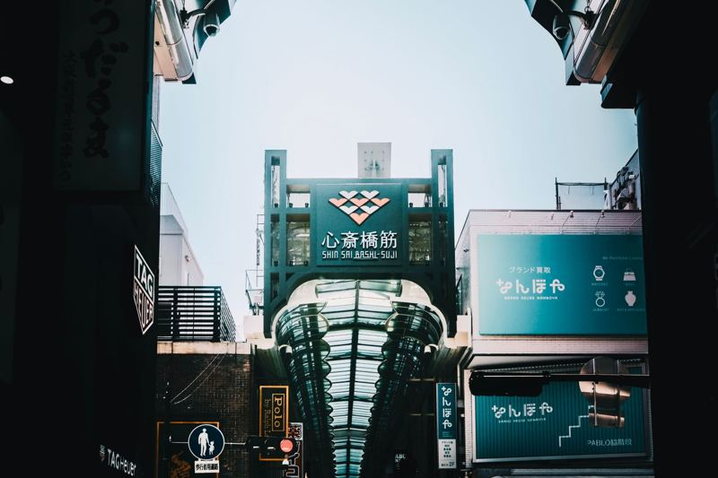
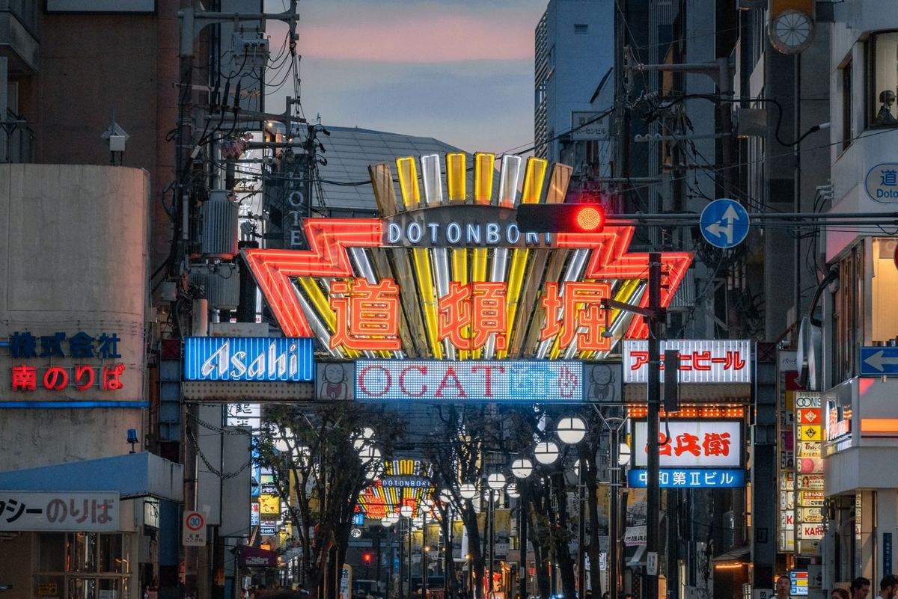
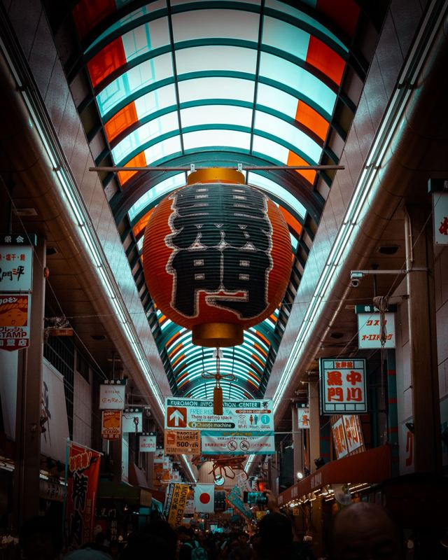
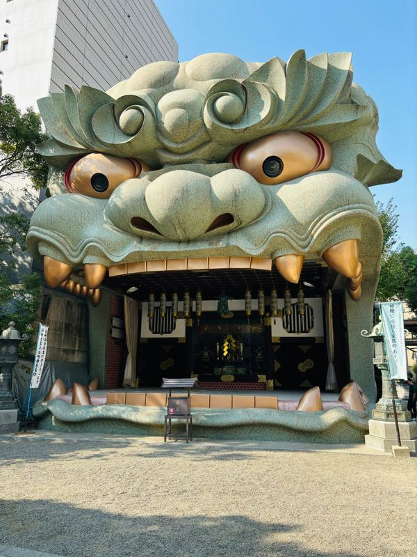
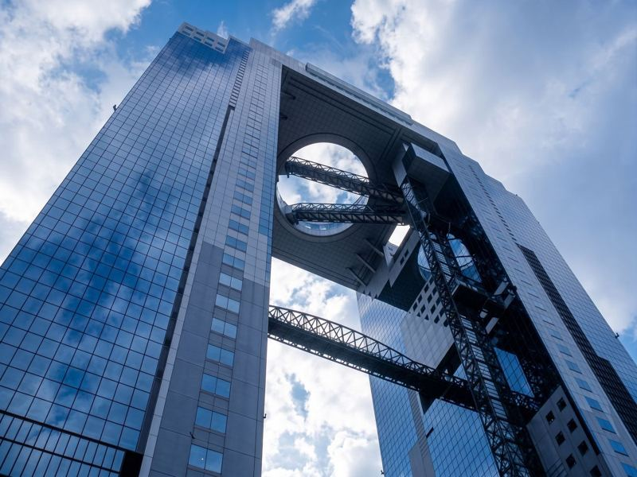
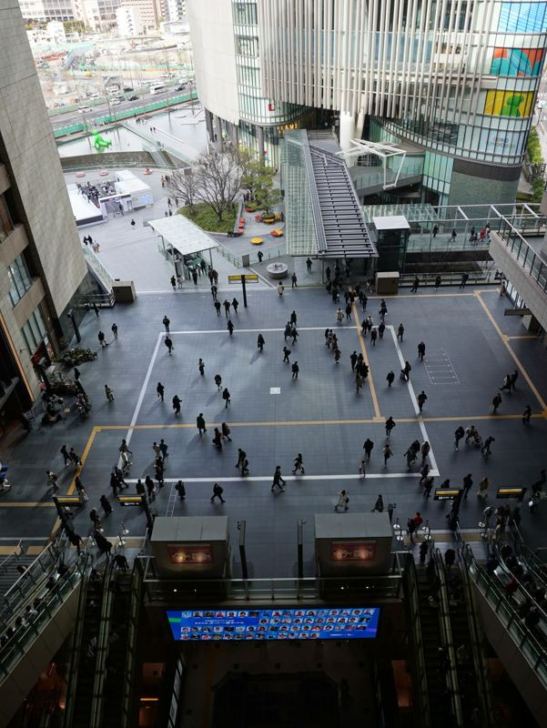
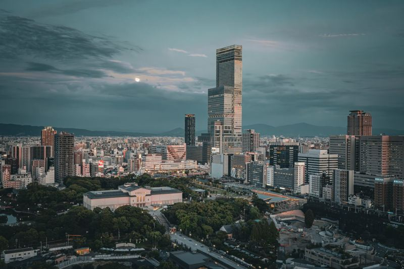
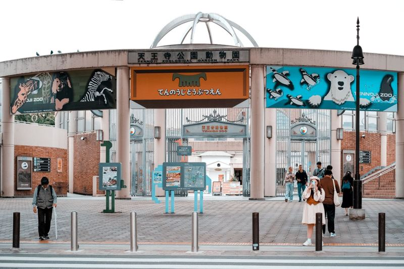
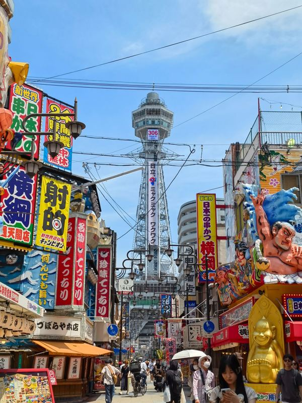

600 mcovered arcadeShinsaibashi-suji
Starts at the Dotonbori canal and runs north. Shopping, rain or shine.

Osaka is easy. All three of these areas sit on the same red subway line, so wherever you sleep, the other two are under 15 minutes away. The real question is what you want outside your door.
This is the Osaka on postcards: neon over the canal, takoyaki on every corner and streets that stay busy late. The airport train from Kansai ends right here, so you can be eating dinner within an hour of landing.

600 mcovered arcadeStarts at the Dotonbori canal and runs north. Shopping, rain or shine.

≈8 minon footOsaka's kitchen. Grilled scallops and wagyu skewers. Go before noon.

≈8 minon footA 12-metre lion head said to swallow bad luck. Free to visit.
See everything within walking distance of Namba →
Four stations called Namba: which one, which exit →
Shin-Osaka or Osaka Station: which one for the bullet train →
Heads up: if you plan to visit Kyoto most days, every trip means a change at Umeda.
Flying into Kansai?Reserve a seat on the Rapi:t airport train before you fly.
Rapi:t ticketsUmeda is modern Osaka, built around JR Osaka Station, the city's biggest hub. Think department stores, rooftop views and underground food halls. If Kyoto, Nara or Universal Studios are on your list, this is the easiest base: direct trains leave from here. Not sure which "Umeda" station or which side? See Osaka Station vs Umeda.

7 minon footTwo towers joined by an open-air rooftop 173 m up. Go for sunset.

0 minin the stationDepartment stores, a rooftop garden and dozens of restaurants, inside the station.
Direct JR train
Straight from Osaka Station, then a 5-minute walk to the gate.
Heads up: if evenings in Dotonbori are the whole plan, you will be riding the subway back every night.
Doing Universal Studios?It is 15 minutes away. Sort your tickets before the trip.
USJ ticketsTennoji is where old Osaka meets a 300-metre skyscraper. One side of the station has Abeno Harukas and big malls. Walk the other way and you are in Shinsekai, a retro maze of fried-skewer bars under Tsutenkaku Tower. Hotels here usually cost a little less than in Namba or Umeda.

2–3 minon footA 300 m tower with an observation deck and a huge department store.

5–10 minon footOne of Japan's oldest zoos. Adults pay ¥500.

≈15 minon footLoud signs, cheap eats and kushikatsu, the deep-fried skewers Osaka is known for.
Heads up: Kyoto day trips need a change at Osaka Station.
Arriving at Kansai?Get the Haruka airport express ticket ready before you land.
Haruka ticketsWalking and train times: Kansai Airport (airport trains), Osaka Metro NiNE (Dotonbori, Tennoji Zoo), Osaka Convention & Tourism Bureau (Umeda Sky Building, Abeno Harukas, Tennoji Zoo), japan-guide, JRailPass and MATCHA for the rest. Still to confirm before launch: Namba to Kuromon (8 or 10 min), Namba to Universal Studios, Tennoji to Shinsekai on foot, and the Kyoto times from Namba and Tennoji, which add two legs together.
All photos from Pexels, free to use: